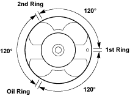

- Carefully wipe any oil or other foreign material from the connecting rod bearing back face and the connecting rod bearing fitting surface.

- Select the connecting rod bearing grade.
- Confirm the connecting rod bearing grade mark (A) on the connecting rod.
- Select the connecting rod bearing grade colour (B) on the connecting rod bearing.

- Install the connecting rod upper bearing to connecting rod.
- Apply a coat of engine oil to the circumference of each piston ring and piston.
- Position the piston ring gaps as shown in the illustration.

- Apply a coat of molybdenum disulphide grease to the two piston skirts. This will facilitate smooth break-in when the engine is first started after reassembly.
- Apply a coat of engine oil to the upper bearing surfaces.
NOTE: Do not apply engine oil to the bearing back faces and the connecting rod bearing fitting surfaces.
- Apply a coat of engine oil to the cylinder wall.
- Position the piston head front mark so that it is facing the front of the cylinder block.
- Use a piston ring compressor to compress the piston rings.